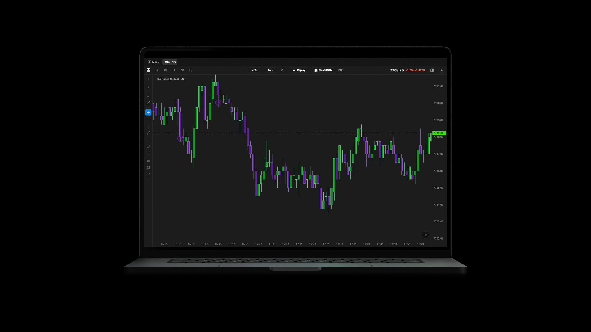

Your entire market.
In your workspace.
From the first glance to preparing an order.
A desktop application that connects your analysis.
Strate. A closer look.
From the first glance to replay. Explore your entire workspace.
Charts & workspace
Every perspective, in your workspace.
From classic charts to split views. Keep your instruments, settings and reference points in an environment that feels yours.
See all featuresStrateDOM
The order book. Beneath the surface.
Observe resting liquidity and the trades that meet it. The heatmap, trade bubbles and order book measures bring together different views of the same market.
See all featuresFootprint
Inside every bar.
Volume, delta, bid × ask: look at each price level to read trades, imbalances and the most active areas.
See all featuresVolume profiles
Volume takes shape.
Locate trading areas, then watch how they evolve. From the session profile to the 3D time profile, keep the distribution in perspective.
See all featuresTools & drawings
Measure. Annotate. Understand.
More than 50 tools and indicators, with interpretation guides. Add drawings and alerts to build your own analysis.
See all featuresReplay & practice
The same market. A second look.
Revisit a session, slow down a move and return to a decisive moment. Your views and tools share the same clock.
See all featuresPreparation & trading
From analysis to intention.
Place your entry, stop and target on the chart. Prepare the corresponding ticket and practise in local simulation.
See all featuresApplication & data
On your computer. Close at hand.
A desktop application for Mac and Windows, with a built-in engine and your sessions, settings and logs stored locally.
See all features


The video is unavailable. Reload the page to try again.
The video is unavailable. Reload the page to try again.
The video is unavailable. Reload the page to try again.
The video is unavailable. Reload the page to try again.
The video is unavailable. Reload the page to try again.
The video is unavailable. Reload the page to try again.
Every detail matters.
Find the features in each family and their conditions of use.
Charts & workspace
- Candlesticks, OHLC bars, line, step line and footprint.
- Aggregation by seconds, minutes, hours, days and weeks; range, volume, Renko and delta bars.
- Custom intervals, zoom, pan, last-price tracking, recentering and scale settings.
- Instrument search, categories, favourites and expiry tracking.
- Tabs, split views and detachable windows, each with independent settings.
- Saved workspaces, settings templates and drawings stored per instrument.
- Light and dark themes; custom colours, candles, grids and backgrounds.
- Resizable subpanels, favourite indicators, crosshair and measuring tools.
- Custom keyboard shortcuts, French and English interface, and a choice of display time zone.
Transaction-based aggregation requires available tick history.
StrateDOM
- Heatmap of historical order book depth and liquidity concentrations.
- Buy and sell trade bubbles with custom aggregation, density, thresholds, size and colours.
- Exposure adjusted to the visible window, with contrast settings.
- On hover: date, time, aggressor side, volume, price and grouped price levels.
- Large passive orders, executed volume and bid/ask imbalance.
- Pressure, cancellations, replenishment, imbalance at the best price and OFI.
- A separate DOM window for a vertical view of the order book.
Order book tools require available depth data. The heatmap is based on order book snapshots. Execution from the vertical DOM has not been announced as available.
Footprint
- Four cell displays: volume + delta, bid × ask, delta only and percentage delta.
- Volume and aggressive trading at each price level within every bar.
- Bid/ask imbalances, adjustable thresholds and handling of zero values on the opposite side.
- POC by volume or absolute delta.
- Volume and delta columns, volume bars and a directional band.
- Custom colours, contrast, borders, text and candle outlines.
Footprint and StrateDOM are distinct modes that you can arrange in separate views.
Volume profiles
- Session profile to locate volume distribution by price.
- Volume profile tool for a selected area of the chart.
- TPO / Market Profile: letters by period, point of control and value area.
- 3D time profile: stacked successive profiles and the POC ridge.
- Rotation, tilt and zoom to explore distribution over time.
The 3D profile shows the shape and evolution of the distribution. Use the standard profile to read a precise price level.
Tools & drawings
- Search, categories, favourites, active indicator management and built-in explanatory guides.
- Horizontal and vertical lines, trends, parallel channels, rectangles and annotations.
- Anchored VWAP and volume profiles drawn over an area.
- Long and short risk/reward tools; price alert lines.
- Snapping, selection, visual settings, hiding and deleting drawings.
- Undo and redo drawing edits.
- VWAPVolume-weighted average price
- Moving averagesSmooth and compare price direction
- Bollinger BandsLocate price within a dispersion envelope
- Strate KeltnerVolatility channel
- Strate DonchianChannel of price extremes
- Strate SupertrendTrend reading with a trailing threshold
- Strate RSIRelative strength of price movements
- Strate MACDMoving-average dynamics and momentum
- Strate ADX / DMITrend strength and direction
- Volume per barTraded activity
- FootprintVolume and delta by price within a bar
- Bar statisticsNumerical summary of trades
- Session profileVolume distribution by price
- 3D volume profile over timeEvolution of the distribution over time
- TPO / Market ProfileStructure of prices visited by period
- Big tradesHighlight large trades
- Cumulative delta / CVDCumulative signed volume
- Price/delta divergencesDivergence between price direction and aggressive trading
- Strate EffortRelationship between order flow activity and price movement
- Strate SweepsIdentify trades crossing multiple price levels
- StrateDOMHeatmap and trade bubbles
- Live liquidity wallsLarge displayed passive volumes
- Executed volumeTraded volume column
- Bid/ask gaugeBalance of order book sizes
- Icebergs — inferenceEvidence consistent with replenished liquidity
- Strate PressureWeighted order book imbalance
- Strate CancellationsLiquidity withdrawals relative to trades
- Strate ReplenishmentLiquidity replenishment
- Strate QueueImbalance at the best bid/ask
- OFIDepth changes at the best bid/ask
- MicropriceSpread midpoint weighted by order sizes
- Kyle’s λPrice impact of signed order flow, with its R²
- VPINImbalance within volume buckets
- Strate ParticipationVolume distribution by lot size
- Strate IntensityRelative pace of trades
- Strate SpreadRoll-based estimate of the implied spread
- Strate IlliquidityAmihud-inspired measure
- Strate BurstsSequences of aggressors
- Strate AbsorptionAreas where trades meet resistance in price
- Strate Stop HuntingPrice/flow patterns interpreted as possible stop hunting
- ATRAverage bar range
- Realised volatilityIntraday variation on a fixed time grid
- Strate Intraday ProfileRelative volatility activity by time of day
- Strate ATR RegimeATR position within its distribution
- Strate EfficiencyDirectional or choppy nature of price movement
- Strate VarianceRegime reading based on a variance ratio
- Strate ConesDispersion projection under the calculation’s assumptions
- Strate Daily RangeRange travelled relative to historical data
- Strate PivotsClassic and Camarilla pivots
- Strate LevelsPrevious-day and previous-week reference levels
- Strate Initial BalanceInitial balance and extensions
- Strate Opening RangeOpening range breakout
- Strate Naked POCsPoints of control not revisited
- Strate SessionsSession boundaries and day/night distinction
- Strate StructureSingle prints and weak extremes
These tools describe market conditions. Icebergs are an inference and “stop hunting” is an interpretation of patterns; Strate cannot see hidden stops. The measures do not guarantee results.
Replay & practice
- Databento MBO: local reconstruction from your .mbo.dbn.zst files, with order book depth for StrateDOM.
- One day or several consecutive days, up to ten files per build; the resulting session determines the instrument.
- Rithmic: replay from the tick data of your Rithmic connection, with manual instrument selection. Trades are replayed, without order book depth.
- Select dates, time boundaries and speed; play, pause, step through and return to the start.
- Rewind with data reconstruction and resume a session where you left off, paused.
- Shared clock across views and indicators applied to data available at the replayed moment.
- Local trade simulation and replay-linked logging.
- A session library stored on your computer; event-based playback where the data is present.
Databento data and Rithmic access are not included in the Strate licence.
Preparation & trading
- Local paper mode and Rithmic/Apex trading connection, subject to licence and account permissions.
- Account selection, traded contract and explicit arming of the trading panel.
- Market, limit and stop orders; long and short risk/reward drawings with an associated ticket.
- Entry, stop-loss and take-profit; planned protections visible on the chart before execution.
- Order modification, moving active protections, cancellation, closing, reversing and flattening positions.
- Positions, active orders, P/L, account information and statistics; order log and execution tracking.
- Checks on size, exposure, order rate, daily loss, trading hours, prices and feed freshness.
- Partial fill handling, SL/TP coordination and reconciliation after a disconnection or restart.
Protections are sent after entry fills and depend on the executor. These checks do not guarantee execution prices, prevent losses or guarantee protection while the application is stopped.
Application & data
- Betas for macOS on Apple Silicon and Windows x64, with the same interface and shared engine foundation.
- Built-in Rust engine; no Python installation needed to use the beta packages.
- Locally supervised data collection, chart delivery and execution.
- Configurable Rithmic connection, product catalogue and expiry tracking.
- Data, sessions, workspaces, settings and logs stored on your computer.
- Option to connect a display workstation to a server on the local network.
- Signed licence key, verifiable offline, with an expiry date and platform and trading permissions.
Live data and trading require a connection to market services. Databento replay has been tested on Windows; validation of live data and trading on Windows is ongoing. Intel Macs are not supported.